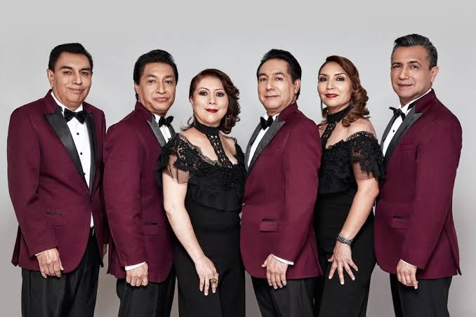
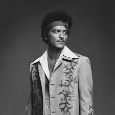

Artistas Destacados 2026
Omar Courtz
Omar Courtz
Ingeniero mecánico de profesión, pero arquitecto de los mejores palos del género urbano.

Los Angeles Azules
Los Angeles Azules
Máximos exponentes de la cumbia romántica mexicana con trayectoria internacional.

Bruno Mars
Bruno Mars
Cantante, compositor y productor estadounidense conocido por su estilo retro y pop.